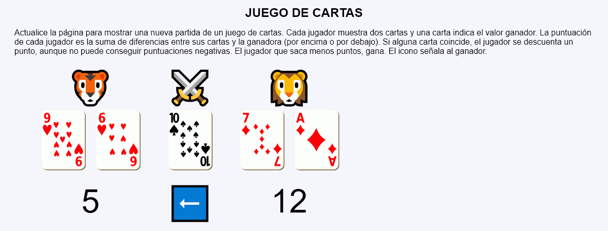
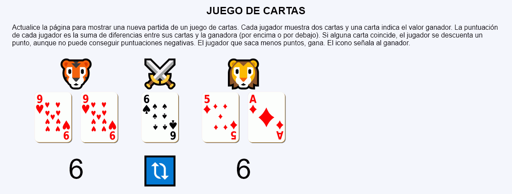
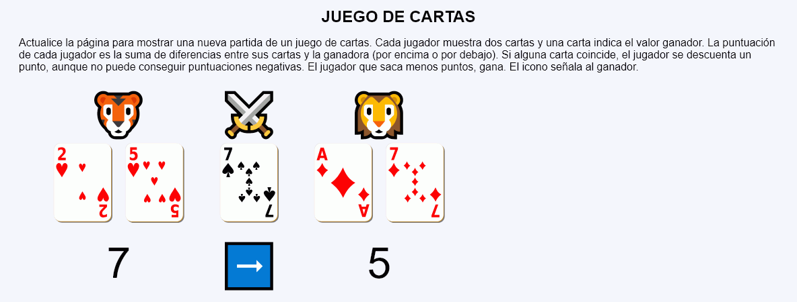
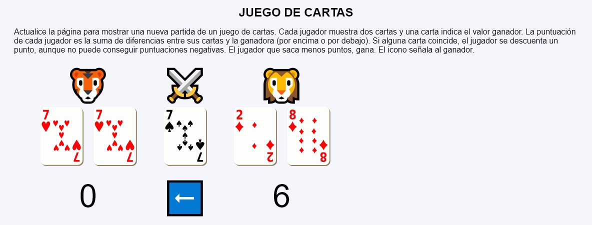

En este ejercicio se debe crear un programa que simule una partida de un juego de cartas. Cada jugador muestra dos cartas y una carta indica el valor ganador. La puntuación de cada jugador es la suma de diferencias entre sus cartas y la ganadora (por encima o por debajo). Si alguna carta coincide, el jugador se descuenta un punto, aunque no puede conseguir puntuaciones negativas. El jugador que saca menos puntos, gana. El icono señala al ganador.




<table style="font-size: 4rem; text-align: center; border-spacing: 50px 0;">
<tr>
<td>🐯</td>
<td>⚔️</td>
<td>🦁</td>
</tr>
<tr>
<td>
<img src="img/cartas/c1.svg" alt="1 de corazones" height="120">
<img src="img/cartas/c2.svg" alt="1 de corazones" height="120">
</td>
<td>
<img src="img/cartas/p3.svg" alt="3 de picas" height="120">
</td>
<td>
<img src="img/cartas/d7.svg" alt="7 de diamantes" height="120">
<img src="img/cartas/d4.svg" alt="7 de diamantes" height="120">
</td>
</tr>
<tr>
<td>3</td>
<td>⬅️</td>
<td>5</td>
</tr>
</table>